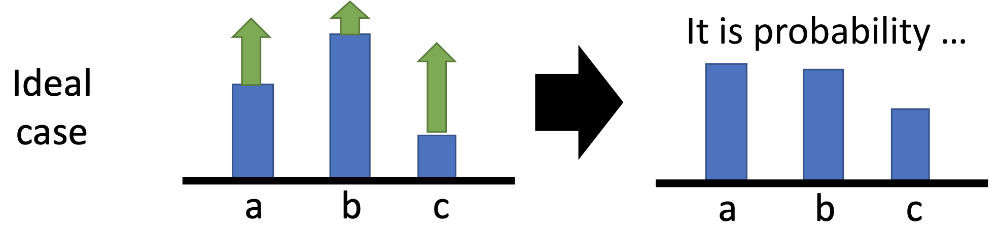
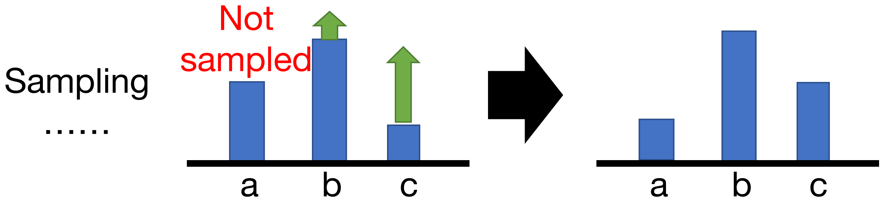
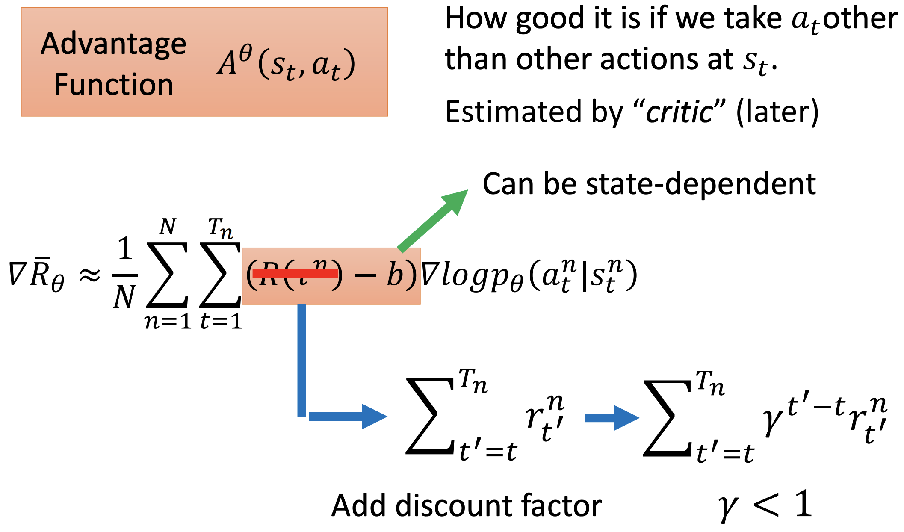

前一篇文章讲了基础算法中的基于 value function 的方法。
本文介绍另外一种算法，它试图直接优化 policy $\pi(s; \theta)$（ $\theta \in R^d$ 是参数，$\pi$ 通常是 actions 的一个分布），而不是学习 Q-function，也就是 Policy Gradient。
Policy Gradient
给定任意 $\theta$，policy 自然的通过 average long-term reward 来评估，average long-term reward 通过长度为 H 的 trajectory $\tau = (s_1, a_1, r_1, … , s_H, a_H, r_H)$ 来获得:
$$R(\theta) = E[\sum_{t=1}^{H} \gamma^{t−1} r_t | a_t \sim \pi(s_t; \theta)] \tag{4}$$
注意这里是average的reward，因此还要乘以这个 trajectory 被 sample 的概率，也就是表示为期望的形式，具体来说，设 $R(\tau) = \sum_{t=1}^{H} \gamma^{t−1} r_t$ 表示某个 trajectory $\tau$ 的回报，$P(\tau| \theta)$ 表示 trajectory $\tau$ 出现的概率，假设我们来玩这个游戏，每个 $\tau$ 有 $P(\tau| \theta)$ 的概率被 sample，那么 average long-term reward 可以表示为：
$$R(\theta) = E[R(\tau) | a_t \sim \pi(s_t; \theta)] = \sum_{\tau} P(\tau|\theta)R(\tau) \tag{5}$$
Policy gradient 的目标就是找到最优参数 $\theta$ ，使得 average long-term reward $R(\theta)$最大，因此是一个优化问题，可以用梯度上升法来求解：
$$\theta \leftarrow \theta + \nabla_\theta R(\theta)\tag{6}$$
由公式5，且 $R(\tau)$ 与 $\theta$ 无关，看作黑盒:
$$\nabla_\theta R(\theta) = \nabla \sum_\tau R(\tau) P(\tau | \theta)= \sum_\tau R(\tau) \nabla P(\tau | \theta) = \sum_\tau R(\tau) P(\tau | \theta) \frac{\nabla P(\tau | \theta)}{P(\tau | \theta)} \tag{7}$$
由一个 trick：$\frac{d \log f(x)}{dx}= \frac{d f(x)/f(x)}{dx}$
因此：
$$\nabla_\theta R(\theta) = \sum_\tau R(\tau) P(\tau | \theta) \nabla \log P(\tau | \theta) = \sum_\tau P(\tau | \theta) [R(\tau) \nabla_\theta \log P(\tau | \theta)] \tag{8}$$
因此 policy gradient 变成了求 $R(\tau) \nabla \log P(\tau | \theta)$ 的期望也就是均值，因此可以 sample 出 N 个样本求均值来逼近公式8。使用 policy $\pi(a_t | s_t;\theta)$ 来玩这个游戏 N 次，获得 N 个 trajectory $\{ \tau^1,\tau^2,…,\tau^N \}$，因此：
$$\nabla_\theta R(\theta) \approx \frac{1}{N} \sum_{n=1}^N R(\tau^n) \nabla_\theta \log P(\tau | \theta) \tag{9}$$
现在问题变成了如何求：$\nabla \log P(\tau | \theta)$
注意到第 n 个 trajectory 表示为：$\tau = (s_1^n, a_1^n, r_1^n, … , s_{H_n}^n, a_{H_n}^n, r_{H_n}^n)$，长度为 $H_n$ ，因此这个 trajectory 被 sample 出的概率：
$$\begin{equation}\begin{split} P(\tau | \theta) &= P(s_1^n) \pi(a_1^n|s_1^n;\theta) P(s_2^n|s_1^n,a_1^n) \pi(a_2^n|s_2^n;\theta) P(s_3^n|s_2^n,a_2^n) … \\ &= P(s_1^n) \prod_{t=1}^{H_n} \pi(a_t^n|s_t^n;\theta) P(r_t^n,s_{t+1}^n | s_t^n,a_t^n) \end{split}\end{equation} \tag{10}$$
公式10两边取log得：
$$\log P(\tau | \theta) = \log P(s_1^n) \sum_{t=1}^{H_n} \log \pi(a_t|s_t^n;\theta) + \log P(r_t^n,s_{t+1}^n | s_t^n,a_t^n) \tag{11}$$
公式11两边对 $\theta$ 求导，并忽略掉与 $\theta$ 无关的部分：
$$\nabla_\theta \log P(\tau | \theta) = \sum_{t=1}^{H_n} \nabla_\theta \log \pi(a_t^n|s_t^n;\theta) \tag{12}$$
代入公式9，其中 N 代表多少个 trajectory，${H_n}$ 代表某个trajectory的长度：
$$\begin{equation}\begin{split} \nabla_\theta R(\theta) &\approx \frac{1}{N} \sum_{n=1}^N R(\tau^n) \nabla \log P(\tau | \theta) \\ &= \frac{1}{N} \sum_{n=1}^N R(\tau^n) \sum_{t=1}^{H_n} \nabla \log \pi(a_t^n|s_t^n;\theta) \\ &= \frac{1}{N} \sum_{n=1}^N \sum_{t=1}^{H_n} R(\tau^n) \nabla \log \pi(a_t^n|s_t^n;\theta) \end{split}\end{equation} \tag{13}$$
公式13的意义是 如果 actor 在 trajectory $\tau^n$ 的时候，看见 state $s_t^n$ 并采用 action $a_t^n$：
- 如果整个 trajectory 的 reward $R(\tau^n) > 0$，则调整 $\theta$ 以增加 $\pi(a_t^n|s_t^n;\theta)$ 的概率
- 如果整个 trajectory 的 reward $R(\tau^n) < 0$，则调整 $\theta$ 以减少 $\pi(a_t^n|s_t^n;\theta)$ 的概率
公式13会导致一个问题，在同一个 trajectory 里面，每次选取的action $a_t$ 都用同一个 weight 也就是 $R(\tau^n)$ 来指导。
理想状态是对于每个 action 用不同的 weight 来指导，把这个 action 执行以后得到的 reward 而不是把整场游戏得到的 reward 作为 weight（也就是抛弃 action 执行之前的reward），因此公式9可以改进为：
$$\begin{equation}\begin{split} \nabla_\theta R(\theta) & \approx \frac{1}{N} \sum_{n=1}^N \sum_{t=1}^{H_n} R(\tau^n) \nabla \log \pi(a_t^n|s_t^n;\theta) \\ &= \frac{1}{N} \sum_{n=1}^N \sum_{t=1}^{H_n} [\sum_{t’=t}^{H_n} r_{t’}^n] \nabla \log \pi(a_t^n|s_t^n;\theta) \end{split}\end{equation} \tag{14}$$
如果再把未来的 reward 进行 discount（$\gamma < 1$），那么公式13成为：
$$\begin{equation}\begin{split} \nabla_\theta R(\theta) & \approx \frac{1}{N} \sum_{n=1}^N \sum_{t=1}^{H_n} R(\tau^n) \nabla \log \pi(a_t^n|s_t^n;\theta) \\ &= \frac{1}{N} \sum_{n=1}^N \sum_{t=1}^{H_n} [\sum_{t’=t}^{H_n} \gamma^{t’-t}r_{t’}^n] \nabla \log \pi(a_t^n|s_t^n;\theta) \end{split}\end{equation} \tag{15}$$
Add baseline
现在的一个问题是，公式13中的 $R(\tau^n)$ 有可能一直是正的，这样并不一定会产生问题，因为正的程度有大有小，如：

图1 中的 b 的 $R(\tau^n)$ 比较小，因此调整 $\theta$ 使 b 被 sample 的概率 $\pi(b|s_t^n;\theta)$ 上升得小一些
但是在图2这种情况下会有问题：

在某一个state某些action 可能一直没有被sample到，其他 action 的概率上升，那么 a 的概率就下降，因为$\pi(a_t^n|s_t^n;\theta)$ 是一个概率分布，满足归一化！
导致 a 不是一个不好的action，只是因为没有被sample到，就被降低了概率，躺输！
因此需要把图2中不那么好的（上升概率比较小的）action b 变为下降，那么归一化的角度，a 的概率就不会下降，不会导致图2的问题。
如何实现？方法是在公式13、14、15中加一个baseline：
